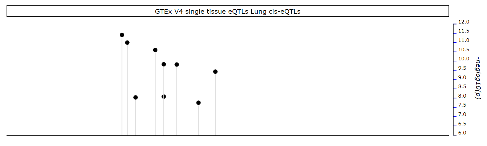

Help
1 / 4
Overview of LdClusterViewer
LdClusterViewer aims to help researchers in better understanding the interplay between gene structure, gene expression and haplotypes.
This viewer visualizes three biological layers as shown in the diagram below.
LdClusterViewer provides a spatial reference to the SNPs allowing users to better understand the possible contribution of the SNP towards the gene expression and function.
In addition, by looking at the methylation information, users are able to gain a further knowledge on the methylation contribution to the gene expression and function.
2 / 4
Individual Plot
Gene Plot
This plot shows a view of the gene's exon intron structure.
The blue markers mark the interesting activity of the gene while each line indicates different transcript.
The strand of the gene of the reference genome is indicated by the direction of the arrows on the gene.
Hovering over the blue marker shows the value of its gene and transcript.
Manhattan Plot
This plot allows users to identify the strongest contribution SNP and to determine if other EQTLs are due to linkage or are they independent signals.
The title on the plot shows the name of the EQTLs' studies.
Hovering over the circle will show the SNP's details.

Bar Chart Plot
This plot shows the methylation of the respective SNPs associated by their position.
Therefore, strong methylation represents how strong an activity occurs in that particular region of gene.
Hovering over the line shows its details.
Sankey Plot
This plot links methylation plot and leaf nodes plot. The width of the connection is proportional to the strength of P-value, FDR and Beta.

3 / 4
Individual Plot
Leaf Nodes Plot
This plot shows the SNPs of the chromosome found in the reference gene and related to the population inputted by the user.

This plot is divided into 3 portions, which are left column, middle column and right column.
In middle column :
- Each vertical line represents a SNP
- The horizontal line connecting the SNPs implies that they are connected to each other
- By clicking on a SNP allows the SNP to be the referenced SNP
- Hovering over a SNP shows the SNP's details and a horizontal line acting as a ruler
In right column:
- Hierarchy dendogram which shows the connection between different SNPs
In left column :
- Reference SNP shows the first SNP in the middle column
- LD threshold is used to filter the Hierarchy dendogram
- Views provide different viewing of the leaf nodes
4 / 4
Other Functions
Configure Plots
Plots can be chosen and arranged through drag and drop action.
After chosen, click on 'Save changes' to display the plot(s).
Window Size
Allow showing visualization on different window sizes.
Show Hover
Showing vertical lines through the visualization to act like a ruler.
Save Plot
Able to convert the current visualization showing on the screen into either PDF, SVG or JPG.
The size of the visualization in SVG and JPG will follow the window size.
Back to main page
Return to the selection of population and gene form.
'X' besides the plot
Clicking on 'X' will result in deleting the plot from the visualization.